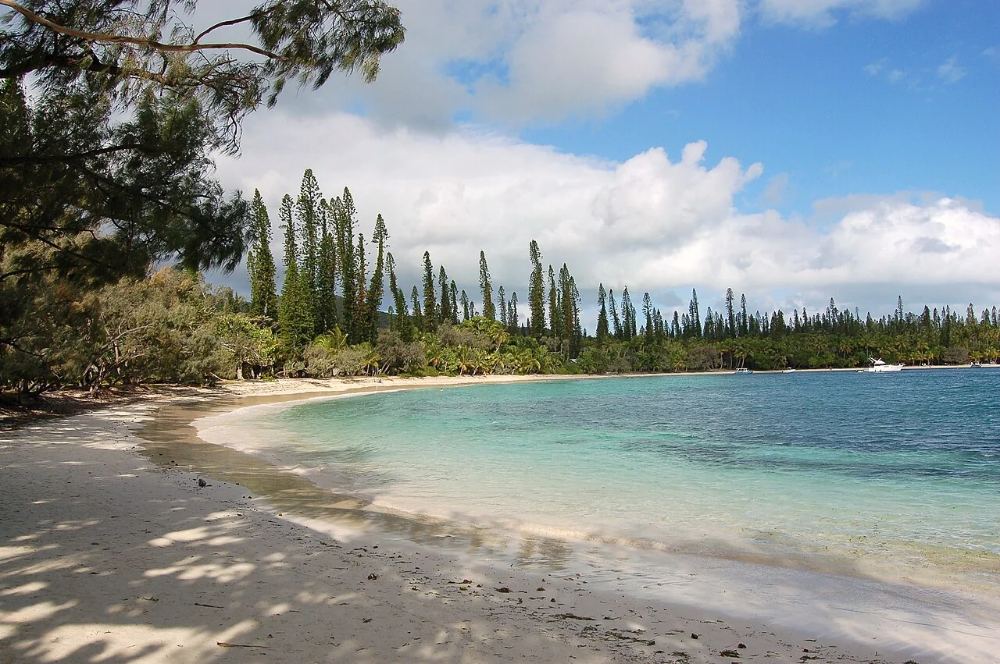

Baie de Kanuméra — Île des Pins
Île des Pins, Nouvelle-Calédonie · snorkeling, baignade, kayak

Petite baie de sable blanc et fin, au sud de l’Île des Pins, voisine de la baie de Kuto et bordée de pins colonnaires et de cocotiers. Un rocher de corail, relié à la plage par un banc de sable, la coupe en deux : il est sacré. Le récif descend à 3–5 m, avec poissons-clowns, poissons-papillons et parfois une tortue ou une raie. Snorkeling Report classe le spot débutant, avec une entrée facile depuis la plage. À Nouméa, la mer est à environ 27 °C en janvier (Climats et Voyages).
- Lieu
- Île des Pins, Nouvelle-Calédonie
- Niveau
- Débutant
- Activités
- snorkeling, baignade, kayak
- Type d'eau
- Mer / océan
- Coordonnées
- -22.66, 167.44 (position approximative du secteur)
Dangers à connaître
- Rocher sacré (tabou) : ne monte pas dessus, par respect pour les coutumes locales.
- Pas de surveillance ni de toilettes publiques sur place.
- La note débutant ne vaut que par bon temps : pas par mer agitée, grand vent, houle, fortes marées ou pluie.
- Les cyclones se forment de novembre à mi-mai, plus probables de fin décembre à début avril.
Le conseil d'Ocean Buddy
Entre dans l’eau juste à gauche du rocher, en le regardant depuis la plage. Il est interdit de palmer sur une bande d’une dizaine de mètres le long du rocher : nage sans palmes dans cette zone.
Ouvrir dans Ocean Buddy Télécharger sur l'App Store
Source : Fiche Ocean Buddy · décembre 2026 · d’après Routard (anse de Kanuméra et baie de Kuto), Snorkeling Report et Climats et Voyages · à vérifier localement.